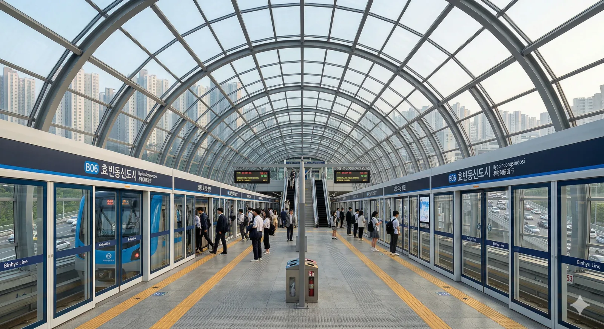

빈효선 광역전철 B06번. 추후 2034년에 효빈 도시철도 청엽선이 개통되면 환승역이 될 예정이다. 효빈광역시 청엽구 효빈동1가 781 소재.
효빈동 신도시의 명실상부한 중심역이다. 빈효선 광역전철의 주요 정차역이자, ITX-마음, 무궁화호 등 일반열차도 필수 정차하는 교통의 요지이다.
원래 이 역의 이름은 언동역(彦洞驛)이었다. 개업 초기만 해도 도심 외곽의 한적한 시골 간이역 수준이었으나, 그때는 진짜 역사 주변에 논밭이랑 비닐하우스밖에 없었다 2017년 빈효선 광역전철 건설과 함께 웅장한 유리궁전 역사가 신축되고, 2018년부터 효빈동신도시 조성이 본격화되면서 그야말로 상전벽해(桑田碧海)를 겪었다.
2018년 행정구역 대개편으로 동네 이름이 '언동'에서 '효빈동1가'로 간지나게(...) 바뀌면서 역명 또한 효빈동신도시역으로 확정되었다. 과거의 낡은 언동역 시절을 기억하는 토박이들은 지금의 천지개벽한 역세권 빌딩 숲을 보고 위화감을 느낀다고 카더라. 불과 몇 년 전까지만 해도 공기수송을 걱정하던 역이, 지금은 출퇴근 시간마다 터져나가는 것을 보면 격세지감을 느낄 수 있다.
여기에 더해 2034년에 청엽선까지 개통되면 명실상부한 청엽구 최강의 더블 역세권으로 거듭날 예정이다. 원래 허허벌판이었던 간이역이 이제는 일반열차와 광역전철, 그리고 도시철도 지선까지 모두 정차하는 깡패 역이 되어버린 셈이다. 인생은 효빈동신도시역처럼
|
빈
효빈동신도시역 출구 정보
|
||
|---|---|---|
| 번호 | 주요 시설 및 방향 | 비고 |
| 1 | 입빈초등학교 | |
| 2 | 효빈동신도시 공공필지 | |
| 3 | 효빈상업고등학교 | |
| 4 | 오석역 (1, 4호선) | |
| 5 | 효빈동 세가아파트 | |
| 효빈동신도시역 이용객 통계 | ||
|---|---|---|
| 연도 | 총합 | 비고 |
| 2020년 | 17,640명 | |
| 2021년 | 18,676명 | |
| 2022년 | 22,197명 | |
| 2023년 | 24,239명 | |
| 2024년 | 25,292명 | 최고 기록 |

| ↑ 오 주(완행) / 진월천(급행) | |||
| ㅣ | 하 | 상 | ㅣ |
| ↓ 장 원(완행/급행) | |||
| 상 | 빈 빈효선 광역전철 (완행/급행 공용) | 오주 · 진월천(급행) · 효빈항 방면 (급행 정차) |
| 하 | 빈 빈효선 광역전철 (완행/급행 공용) | 약산 · 궁하 · 천주 · 고남 방면 (급행 정차) |
| ㅣ | ㅣ | |||
|
|
||
|
|
| 정류소명 | 방향 | 경유 노선 |
|---|---|---|
| 효빈동신도시 | 순방향 | 8, 68, 80, 112, 181, 281, 291, 582, 682 |
| 효빈동신도시 | 역방향 | 08-1, 86, 80-1, 112-1, 811, 821, 921, 852, 682 |